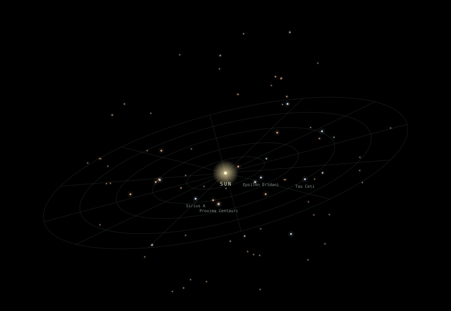

The solar neighbourhood100 stars · Real astronomical data3D atlas ↗01 — Space / Interactive
NEAR / 100
Our corner of the universe, in three dimensions. Explore the Sun and 99 nearby stars, with positions drawn from a real astronomical catalogue.